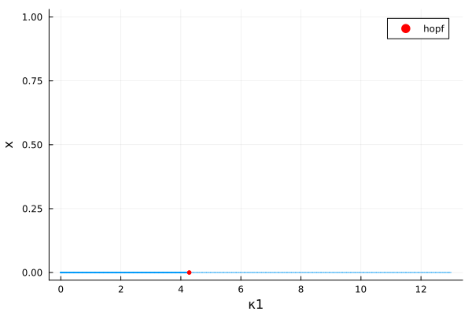
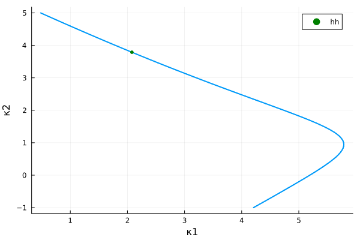

Humphries model (codim 2, periodic orbit)
Consider the model [Hum] as an example of state-dependent delays
\[x^{\prime}(t)=-\gamma x(t)-\kappa_1 x\left(t-a_1-c x(t)\right)-\kappa_2 x\left(t-a_2-c x(t)\right)\]
Continuation and codim 1 bifurcations
We first instantiate the model
using Revise, DDEBifurcationKit, Plotsusing BifurcationKitconst BK = BifurcationKitfunction humpriesVF(x, xd, p) (;κ1, κ2, γ, a1, a2, c) = p [ -γ * x[1] - κ1 * xd.u[1][1] - κ2 * xd.u[2][1] ]endfunction delaysF(x, par) [ par.a1 + par.c * x[1], par.a2 + par.c * x[1], ]endpars = (κ1=0., κ2=2.3, a1=1.3, a2=6, γ=4.75, c=1.)x0 = zeros(1)prob = SDDDEBifProblem(humpriesVF, delaysF, x0, pars, (@optic _.κ1))┌─ State-dependent delays Bifurcation Problem with uType Vector{Float64}
├─ Inplace: false
├─ Dimension: 1
└─ Parameter: κ1We then compute the branch
optn = NewtonPar(eigsolver = DDE_DefaultEig())opts = ContinuationPar(p_max = 13., p_min = 0., newton_options = optn, ds = -0.01, detect_bifurcation = 3, nev = 3, )br = continuation(prob, PALC(), opts; verbosity = 0, bothside = true) ┌─ Curve type: EquilibriumCont
├─ Number of points: 100
├─ Type of vectors: Vector{Float64}
├─ Parameter κ1 starts at 13.0, ends at 0.0
├─ Algo: PALC [Secant]
└─ Special points:
- # 1, endpoint at κ1 ≈ +13.00000000, step = 0
- # 2, hopf at κ1 ≈ +4.28020573 ∈ (+4.27136690, +4.28020573), |δp|=9e-03, [converged], δ = (-2, -2), step = 62
- # 3, endpoint at κ1 ≈ +0.00000000, step = 99
and plot it
scene = plot(br)
Continuation of Hopf point
We follow the Hopf points in the parameter plane $(\kappa_1,\kappa_2)$. We tell the solver to consider br.specialpoint[2] and continue it.
brhopf = continuation(br, 2, (@optic _.κ2), ContinuationPar(br.contparams, detect_bifurcation = 2, dsmax = 0.04, max_steps = 230, p_max = 5., p_min = -1.,ds = -0.02); detect_codim2_bifurcation = 2, bothside = true, start_with_eigen = true)scene = plot(brhopf, vars = (:κ1, :κ2))
Branch of periodic orbits
We compute the branch of periodic orbits from the Hopf bifurcation points using orthogonal collocation. We use a lot of time sections $N_{tst}=200$ to have enough precision to resolve the sophisticated branch of periodic solutions especially near the first Fold point around $\kappa_1\approx 10$.
# continuation parameters
opts_po_cont = ContinuationPar(dsmax = 0.05, ds = 0.001, dsmin = 1e-4, p_max = 12., max_steps = 3000, detect_bifurcation = 0, plot_every_step = 20)
# arguments for periodic orbits
args_po = (
plot_solution = (x, p; k...) -> begin
xtt = BK.get_periodic_orbit(p.prob, x, nothing)
plot!(xtt.t, xtt[1,:]; label = "x", k...)
plot!(br; subplot = 1, putspecialptlegend = false)
end,
normC = norminf)
probpo = Collocation(100, 4; N = 1, jacobian = BK.AutoDiffDense())
br_pocoll = continuation(
br, 2, opts_po_cont,
probpo;
# regular continuation options
alg = PALC(tangent = Bordered()),
args_po...,
δp = 0.05,
callback_newton = BK.cbMaxNorm(10.0),
)
scene = plot(br, br_pocoll)References
- Hum
Humphries et al. (2012), Dynamics of a delay differential equation with multiple state-dependent delays, Discrete and Continuous Dynamical Systems 32(8) pp. 2701-2727 http://dx.doi.org/10.3934/dcds.2012.32.2701)